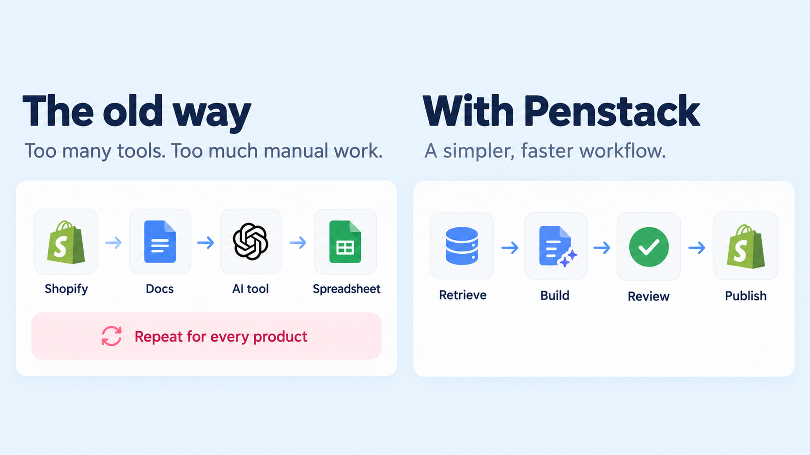
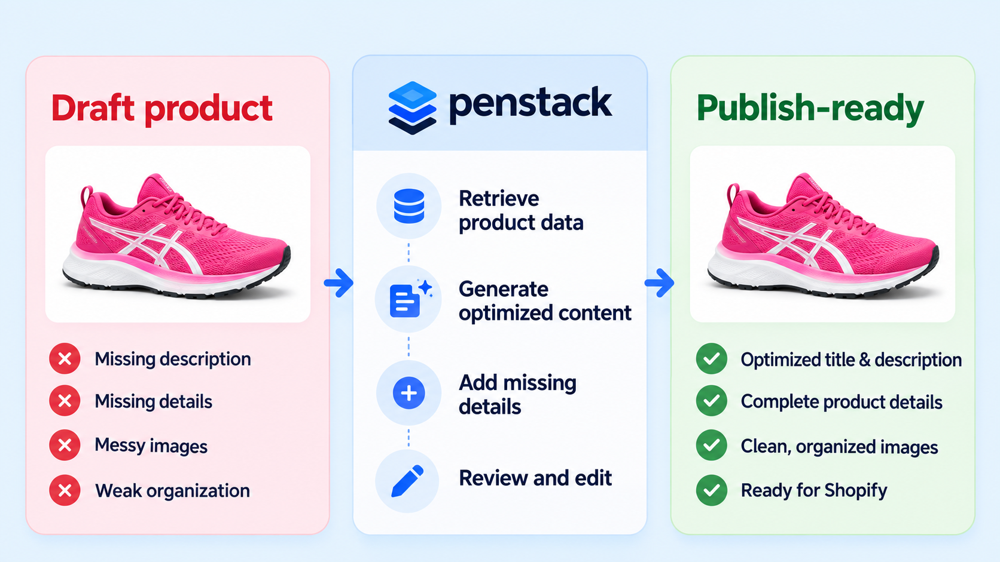
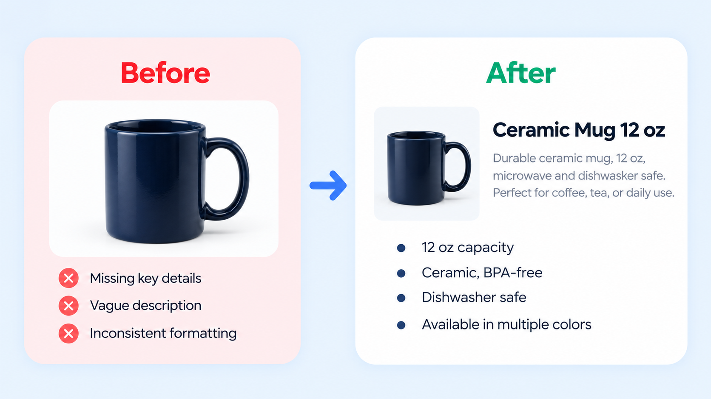
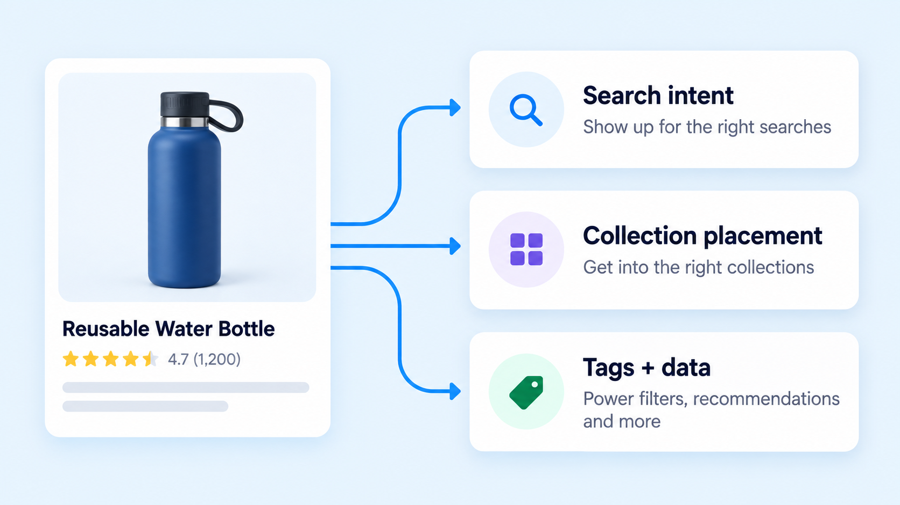
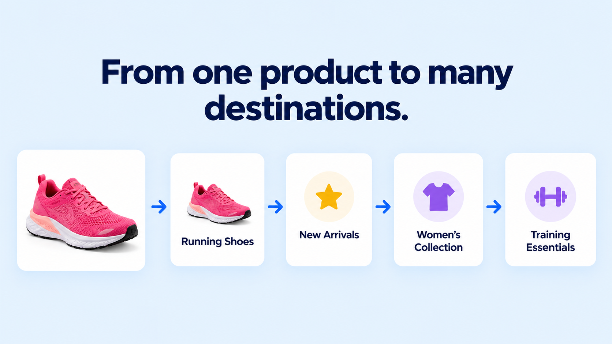
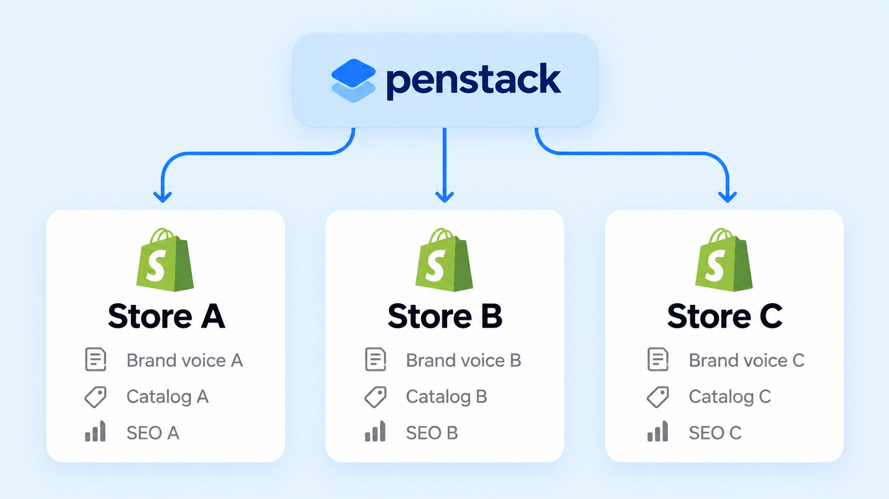
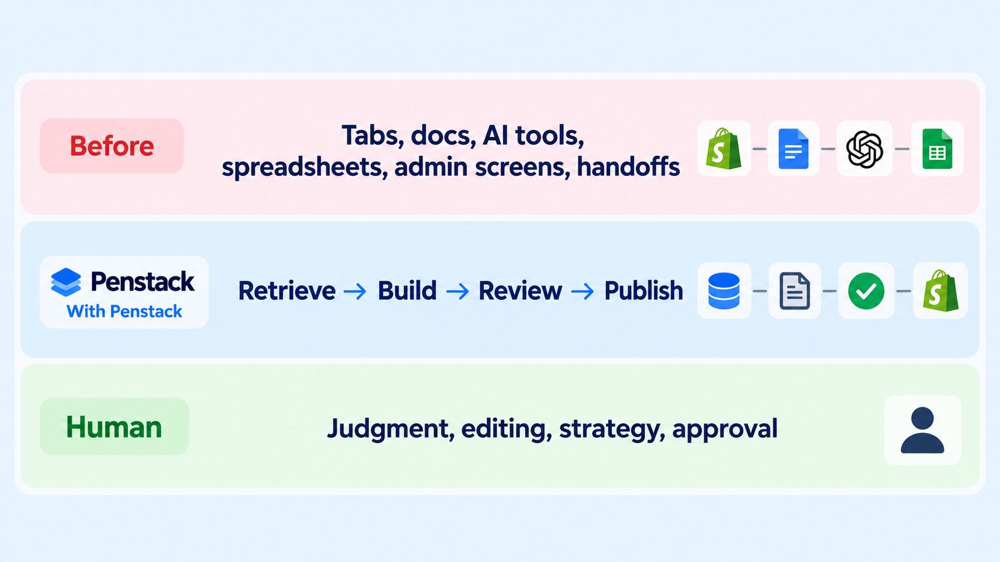

Keep every product on-brand.
Use Brand Voice context to keep product writing more consistent across products, launches, and stores.
USE CASES
See how teams use penstack to create, optimize, and manage Shopify product content at scale, without the repetitive middle.

Go from a Shopify draft to publish-ready content with fewer handoffs and less repeated setup.

Fix incomplete, outdated, or inconsistent product content so every listing is clearer, more useful, and easier to maintain.

Help more shoppers find your products by connecting product content with search intent, collection context, and structured data.

Make products easier to organize, promote, filter, and recommend across your storefront.

Run distinct brand voices, catalogs, and SEO strategies from one Penstack workflow while keeping each storefront separate.

MORE JOBS PENSTACK CAN TAKE ON
Not every use case needs a full workflow diagram. These jobs fit naturally into the same product-content process.
Use Brand Voice context to keep product writing more consistent across products, launches, and stores.
Generate useful alt text, improve image naming, and add stronger image context for accessibility and search.
Fill missing product details, custom fields, materials, care information, and other structured context.
Review, edit, and approve product content before the final publish step in Shopify.
THE BIGGER PATTERN
Penstack removes the repetitive middle so your team can spend more time on judgment, merchandising, strategy, and customer experience.
Get started →
LESS WORKFLOW OVERHEAD. MORE USEFUL WORK.
penstack brings that repetitive middle into one connected workflow so you can spend more attention on the work that actually needs you.
See how penstack works →